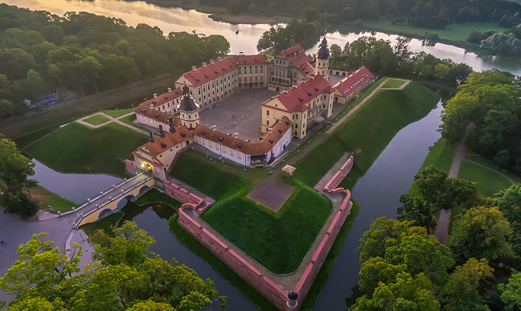
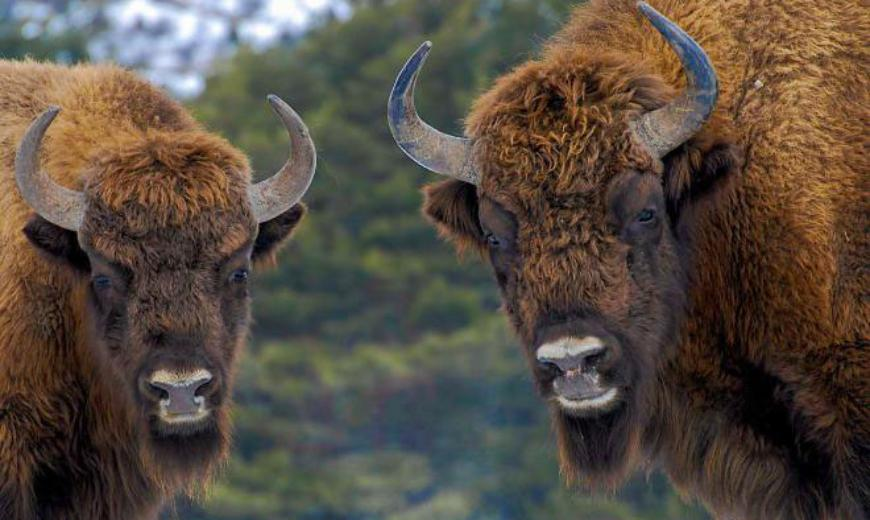
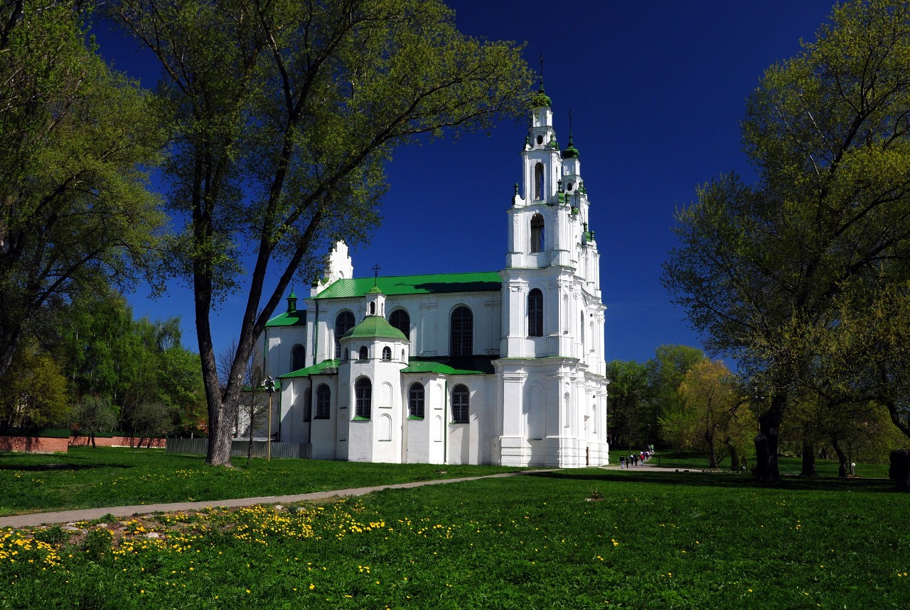

Топ 5 мест Беларуси
Мирский замок и Несвижский дворец
Чуть менее 100 км отделяет городской поселок Мир (Гродненская область) от Минска. Здесь находится достопримечательность, о которой вы наверняка не раз слышали, — знаменитый Мирский замок, возведенный в XVI столетии.Однако было бы неправильно не упомянуть вместе с ним и Несвижский дворец, ведь резиденция Радзивиллов находится всего в 30 км от него и посещение обеих обычно происходит в тандеме. Эти достопримечательности Беларуси являются особенными не только благодаря сохранности и популярности. Они обе включены в список Всемирного наследия ЮНЕСКО. Для туристов они представляют интерес еще и потому, что в Мире и Несвиже можно:
- Принять участие в увлекательном квесте. Собирайте команду, отправляйтесь на исследование потаенных уголков замков и разгадывайте тайны их предыдущих владельцев.
- Устроить торжественную церемонию бракосочетания. Только представьте: прямо под сводами замка вы со своей второй половинкой станете супругами. Романтичнее и придумать сложно!
- Переночевать прямо в замке. Почувствуйте себя князем, устраиваясь в роскошных апартаментах на ночлег!
- Пообедать в ресторане. Станьте ненадолго настоящей королевской особой и вкусите блюда национальной кухни по рецептам прошлых веков.
Мемориальный комплекс «Хатынь»

Мемориальный комплекс «Хатынь», бесспорно, одна из главных достопримечательностей Беларуси. Расположена она в 60 км от Минска. Пускай это место не назовешь развлекательным, равнодушным оно точно никого не оставляет. Более семидесяти лет назад прямо на этом месте стояла деревня — совершенно обычная, с двумя сотнями жителей, которые работали, любили, отдыхали, — одним словом, ЖИЛИ здесь, как и жители любой другой деревни Беларуси. И жили бы их потомки в ней и по сей день, если бы судьба не распорядилась иначе: во время войны Хатынь была сожжена вместе с ее жителями… Скорбный мемориал хранит память не только об этой деревне, но и о других 185 деревнях, которые постигла та же участь.
Национальный парк «Беловежская пуща»

Ни один топ достопримечательностей Беларуси не обходится без упоминания главного национального парка нашей страны. Беловежская пуща — не просто территория, охраняемая государством. Это — родина зубров и древнейший лесной массив Европы, где вековые деревья — в порядке вещей, а в туристической части живет самый настоящий Дед Мороз. Как и музей миниатюр, пуща — одно из идеальных мест для отдыха с детьми. Ведь в чудесную сказку можно погрузиться не только зимой: волшебный старик принимает гостей круглый год. Кстати, в музее миниатюр есть не только макет Беловежской пущи, а еще и Вискули — резиденции, где было подписано соглашение о распаде СССР. Также тут можно увидеть точные копии двух самых высоких деревьев Пущи — дуба и сосны, которым более 1000 лет.
На знакомство с главной природной достопримечательностью Беларуси лучше выделить несколько дней: она находится на расстоянии около 400 км. И пусть вас не пугает эта цифра: инфраструктура туристической части парка отлично развита, и здесь будет, где переночевать с комфортом.
Брестская крепость

Бесспорно, одна из главных туристических достопримечательностей Беларуси. Это место не нуждается в представлении. Мемориальный комплекс, хранящий память о героизме советских солдат, это такой же must have для туристов, как и Хатынь, и Замки. Кстати, посещение Брестской крепости можно совместить с путешествием в Беловежскую пущу: одну локацию от другой отделяет всего 60 км, а от Минска до нее нужно будет проехать около 350 км.
Софийский собор в Полоцке
Никакие фотографии не передадут красоты белоснежного Софийского собора в Полоцке! Самое удивительное, что он пускай и перестраивался много раз, но все же сохранился до наших времен аж с XI столетия. Это интересное место Беларуси, которое стоит посетить в конце августа: как раз под стенами Софии разворачивается масштабный фестиваль исторической реконструкции «Рубон» и празднуется день города. 250 км отделяют Полоцк от Минска.
Смотрите также: Самые посещаемые художественные музеи мира.